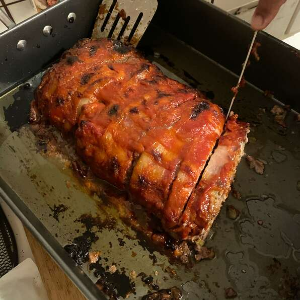

Easy Meatloaf

Description
This easy meatloaf will have the whole families mouth watering
once it comes out of the oven
Ingredients
- 1 1/2 pounds ground beef
- 1 egg
- 1 onion, chopped
- 1 cup milk
- 1 cup dried bread crumbs
- salt and pepper to taste
- 2 tablespoons brown sugar
- 1/3 cup ketchup
Steps
- Preheat oven to 350 degrees F
- In a large bowl, combine the beef, egg, onion, milk and bread or cracker crumbs.
Season with salt and pepper to taste and place in a lightly greased 9x5 inch loaf pan,
or form into a loaf and place in a lightly greased 9x13 inc baking dish.
- In a seperate bowl, combine the brown sugar, mustard and ketchup. Mix well
and pour over meatloaf.
- Bake at 350 degress F for 1 hour